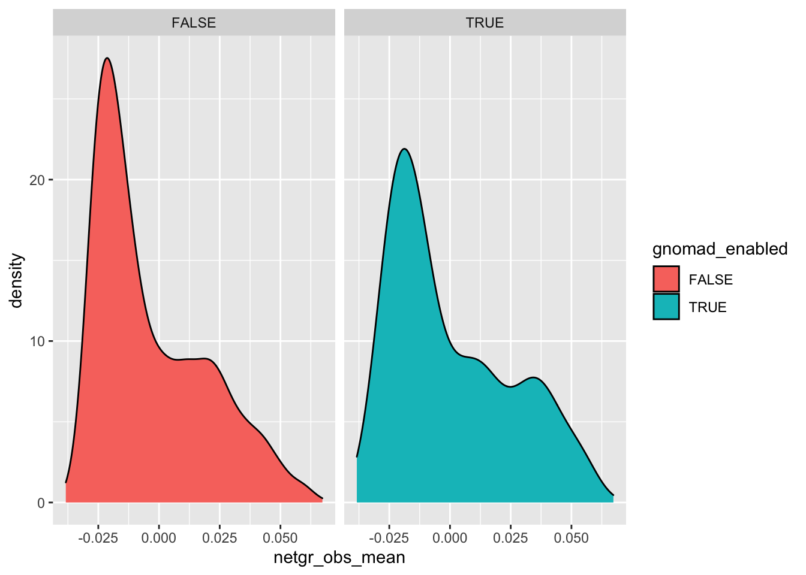
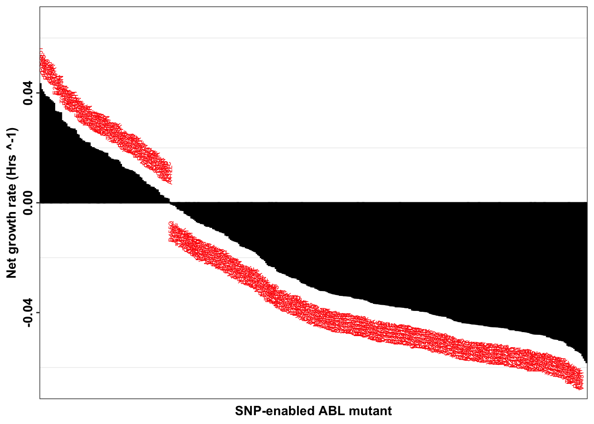
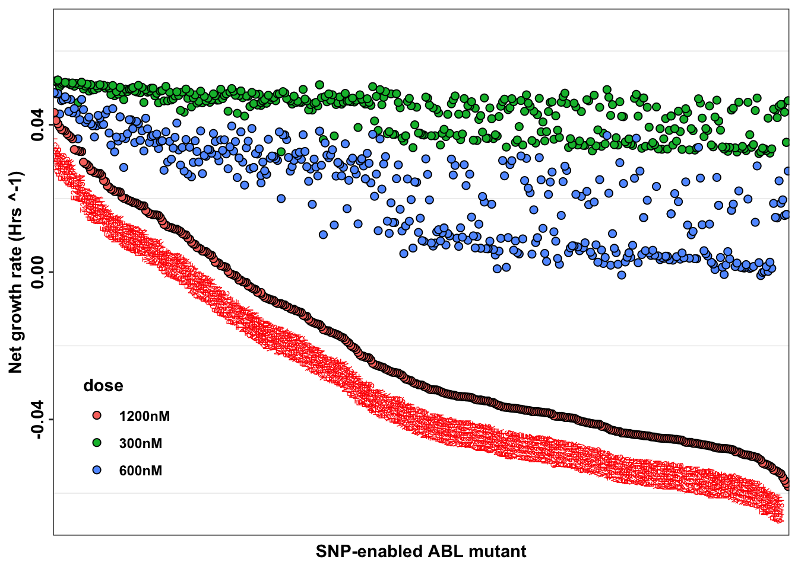
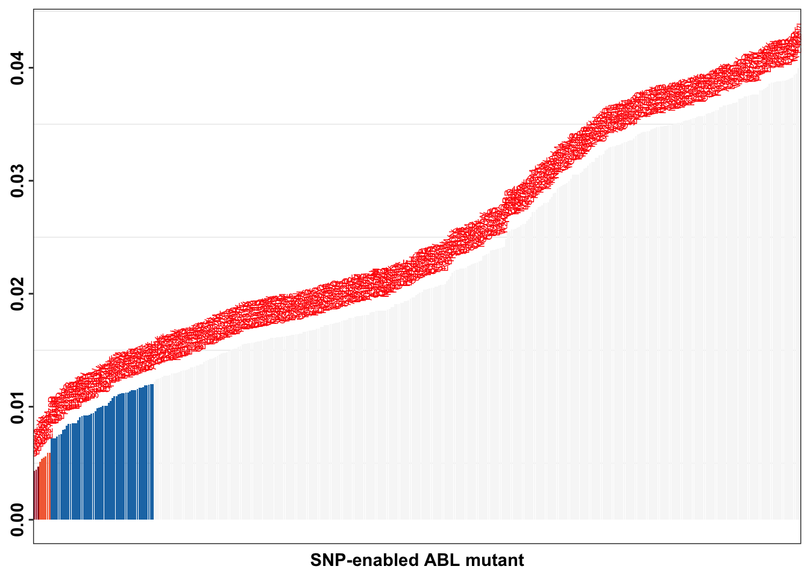
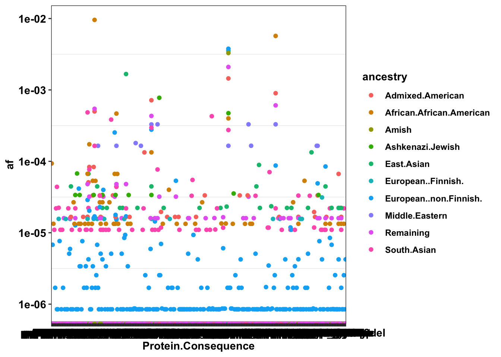
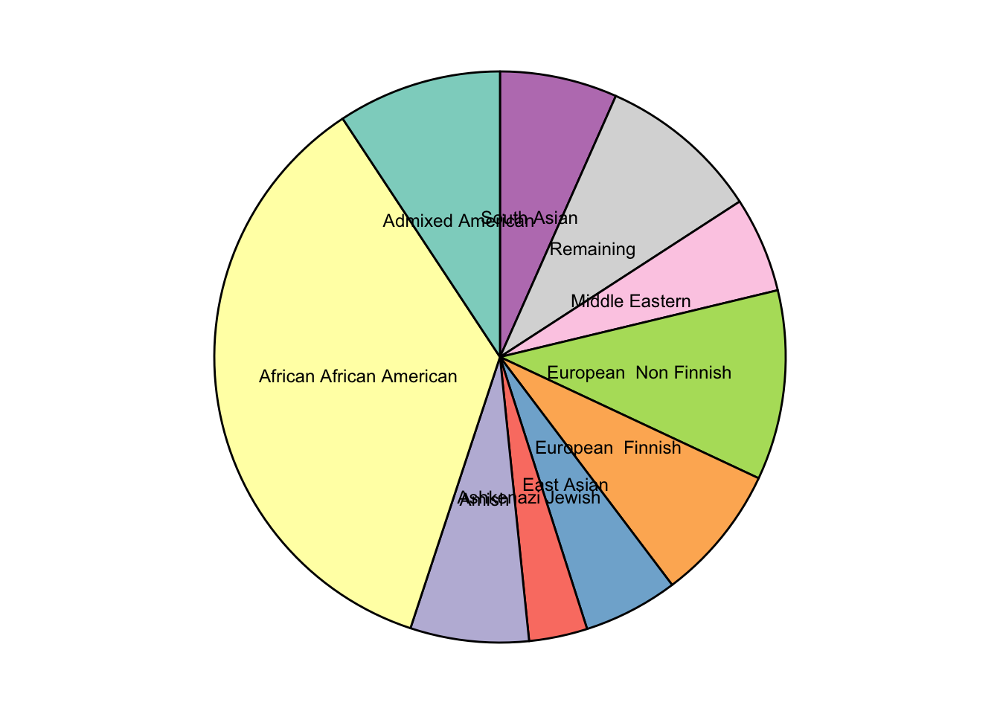
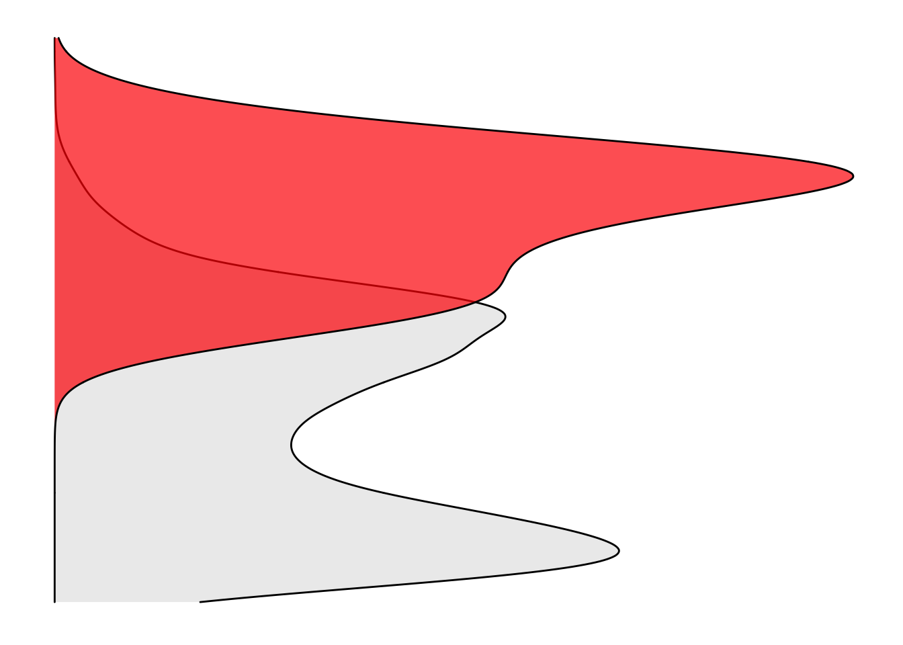
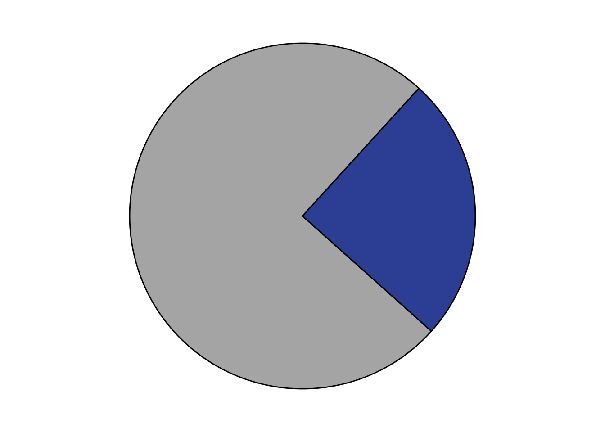

Main gnomad analysis
Data parsing
# rm(list=ls())
# gnomad=read.csv("data/Gnomad_ABL/gnomAD_v2.1.1_ENSG00000097007_2023_03_03_02_21_35.csv")
# gnomad=read.csv("data/gnomad_ABL/gnomAD_v3.1.2_ENSG00000097007_2023_03_03_14_02_24.csv")
gnomad=read.csv("data/gnomad_ABL/gnomAD_v4.1.0_ENSG00000097007_2025_07_27_16_16_27.csv")
# 1100 Gnomad SNPS total
gnomad=gnomad%>%filter(Position>=130835447,Position<=130884388)
# Half of the SNPS are within the ABL kinase
gnomad=gnomad%>%filter(!VEP.Annotation%in%c("intron_variant","frameshift_variant"))
# Half of the SNPS in the kinase are non-intron non-synonymous
gnomad=gnomad%>%rowwise()%>%mutate(residue=substr(gsub("p\\.","",Protein.Consequence),4,6),
residue=as.numeric(gsub("([0-9]+).*$", "\\1", residue)))
gnomad=gnomad%>%filter(!residue%in%NA,residue<=516)
# Therefore, there are 186 gnomad variants in the in the SH3 or SH2 or Kinase domain of ABL
# 84 out of the 186 gnomad variants are in the kinase domain of ABL
# Within the gnomad variants in the kinase, only 10 are allele frequency > 1 in 100,000
# a=gnomad%>%filter(!ClinVar.Clinical.Significance%in%"")
# a=gnomad%>%group_by(ClinVar.Clinical.Significance)%>%summarize(ct=n())
# Of the 184 ABL SNPs, 152 have no clinvar annotation, 12 are benign, 14 are likely benign
# 9 are uncertain significance
# a=gnomad%>%filter(residue>=242,residue<=516)
# a=a%>%arrange(desc(Allele.Count))
# a=a%>%select(Protein.Consequence,VEP.Annotation,ClinVar.Clinical.Significance,Allele.Frequency,Allele.Count,Allele.Number)
# write.csv(a,"gnomad_abl_kinase_coding_mutants.csv")
# b=a%>%filter(!VEP.Annotation%in%"synonymous_variant",!ClinVar.Clinical.Significance%in%"")
# There are 7 non-synonymous clinvar variants in the kinase domain in which there is a clinical annotation. Two of these are high frequency: R473Q/G (not provided clinvar significance), and K247R (benign). Both of these are neutral in our screen
# data=read.csv("output/ABLEnrichmentScreens/IL3_Enrichment_bgmerged_2.20.23.csv",header = T,stringsAsFactors = F)
# c=data%>%filter(protein_start%in%c(247,473))
#Of the clinvar variants
# source("code/variantcaller/vep_fromquery.R")
# b=vep_fromquery("130863033:130863036/TAC",9,"ENST00000318560")
# sort(unique(gnomad$VEP.Annotation))
# a=gnomad%>%filter(!Transcript%in%"ENST00000318560.5")
# a=gnomad%>%filter(!Transcript%in%"ENST00000372348.2")
# sort(unique(gnomad$Transcript))
# sort(unique(gnomad$VEP.Annotation))
# ABL kinase Spans from 130835447 to 130884388
#Aim is to create a list of gnomad enabled mutants, i.e. mutants that would have required multi-nucleotide variants before, but are now a single nucleotide away
# First: Make a function that calculates all possible amino acid substitutions for a given ref codon at a hamming distance of 1.
#A key pessimistic question to ask is: for any given residue, how many amino acid substitution types are only possible with two nucleotide substitutions? If basically every amino acid susbtitution is possible with a single nucleotide change, then it doesn't really matter if you make more possible with MNVs.
gnomad_simple=gnomad%>%dplyr::select(Position,Reference,Alternate,Protein.Consequence,residue,Transcript.Consequence,VEP.Annotation,Allele.Count)
gnomad_simple=gnomad_simple%>%
rowwise()%>%
mutate(residue=substr(gsub("p\\.","",Protein.Consequence),4,6),
residue=as.numeric(gsub("([0-9]+).*$", "\\1", residue)),
position=as.numeric(gsub("([0-9]+).*$", "\\1",strsplit(Transcript.Consequence,"\\.")[[1]][2])))
gnomad_simple=gnomad_simple%>%
# rowwise()%>%
mutate(ref=ref_search(position-ref_offset,position+1-ref_offset))
#The following set of functions takes a position, ref, and and alt nucleotide, figures out which codon was mutated for each mutant, which index within the codon, and makes the alt_codon based on the new index
# Alt offset: If alt_offset is 1, the mutation happens at position 1 in the codon, and so on
# Please note that a lot of this code relies on there being a single nucleotide substitution, i.e. it ignores mnvs and frameshifting indels. If frameshifts are included, then you have to think about variants that have long alt_offset lengths (not just 1 or 2 or 3).
# If its position 1: paste ALT with Second two Nucleotides
# If its position 2: paste first nucleotide, ALT nucleotide, and third nucleotide
# If it's position 3: paste second two nucleotides with the ALT nucleotide
# a=gnomad%>%filter(Position%in%c(130862953:130862953))
# ref_genomic_coordinates[(130854922-ref_genomic_coordinates$start)%in%c(0,1,2),"codon"])[[1]]
gnomad_simple=gnomad_simple%>%
rowwise()%>%
mutate(ref_codon=(ref_genomic_coordinates[(position-ref_genomic_coordinates$start)%in%c(0,1,2),"codon"])[[1]],
position_codon_end=(ref_genomic_coordinates[(position-ref_genomic_coordinates$start)%in%c(0,1,2),"end"])[[1]],
alt_offset=position_codon_end-position,
alt_codon=case_when(alt_offset%in%3~paste(Alternate,substr(ref_codon,2,3),sep=""),
alt_offset%in%1~paste(substr(ref_codon,1,2),Alternate,sep = ""),
alt_offset%in%2~paste(substr(ref_codon,1,1),Alternate,substr(ref_codon,3,3),sep = "")))
# ref_genomic_coordinates(130835462)
# ref_genomic_coordinates$start
gnomad_simple=gnomad_simple%>%dplyr::rename("refseq_codon"="ref_codon",
"gnomad_codon"="alt_codon")
gnomad_simple=gnomad_simple%>%filter(nchar(gnomad_codon)<=3)
gnomad_simple=gnomad_simple%>%mutate(ref_aa=codon_table[refseq_codon==codon_table$Codon,"Letter"],
gnomad_aa=codon_table[gnomad_codon==codon_table$Codon,"Letter"],
species_enabler=paste(ref_aa,residue,gnomad_aa,sep = ""))
# a=gnomad_simple%>%filter(refseq_codon%in%gnomad_codon)
########## Next figure out all unique gnomad codons by ABL residue.
# If a given residue has no gnomad SNPs, then there are no unique gnomad codons of course
# What if a given position has two gnomad codons: figure out all possible gnomad codons and which ones are unique
# i=1
# gnomad_simple$gnomad_enabled_AAs=NA
for(i in seq(1:nrow(gnomad_simple))){
# gnomad_bypos=gnomad_simple%>%filter(residue%in%residue_i)
# i=1
# i=168
# 167, 168
# i=177
gnomad_byiter=gnomad_simple[i,]
enabler_i=gnomad_byiter$species_enabler
resi_i=gnomad_byiter$residue
enabled_i=gnomad_unique_AAs(gnomad_byiter$refseq_codon,gnomad_byiter$gnomad_codon)
if(length(enabled_i)==0){
# i.e. if there are no unique gnomad AAs, then skip to the next iteration in the loop
next
}
# a=gnomad_simple%>%group_by(residue)%>%summarize(ct=n())
# gnomad_simple[i,"gnomad_enabled_AAs"]=as.list(gnomad_unique_AAs(gnomad_byiter$refseq_codon,gnomad_byiter$gnomad_codon))
gnomad_enabled_i=data.frame(enabler_i,enabled_i,resi_i)
if(i==1){
gnomad_enabled=gnomad_enabled_i
}
else if(!i==1){
gnomad_enabled=rbind(gnomad_enabled,gnomad_enabled_i)
}
}
gnomad_enabled=gnomad_enabled%>%distinct(enabler_i,enabled_i,resi_i)
gnomad_enabled=gnomad_enabled%>%dplyr::select(species_enabler=enabler_i,protein_start=resi_i,alt_aa=enabled_i)
gnomad_enabled$gnomad_enabled=T
# a=gnomad_enabled%>%fi lter(protein_start%in%c(242:494))
# There are a total of 186 gnomad enabled ABL mutants. We see 72 of these mutants in our imatinib screens
# I have the gnomad enabled alternate amino acid by residue, but it might also be nice ot get a residue specific gnomad probability.
gnomad_pos_probabilities=gnomad%>%
group_by(residue)%>%
summarize(Allele.Count.Total=sum(Allele.Count),
Allele.Number.Total=sum(Allele.Number))%>%
mutate(Allele.Frequency.Gnomad=Allele.Count.Total/Allele.Number.Total)%>%
# dplyr::select(-c("Allele.Count.Total","Allele.Number.Total"))%>%
rename(protein_start=residue)
gnomad_enabled=merge(gnomad_enabled,gnomad_pos_probabilities,by=c("protein_start"),all.x = T)
########## Then merge with Imatinib dataset by adding a "gnomad enabled" flag to the IL3 dataset###########
# New Tileseq data as of 2.17.24
imatdata=read.csv("output/ABLEnrichmentScreens/ABL_Region1234_Tileseq/TileSeq_full_kinase_alldoses_with_lfc_corrected_netgrowths.csv",header = T,stringsAsFactors = F)
imatdata=imatdata%>%filter(ct_screen1_before>=5)
# New CRISPR-DS imatinib data (conducted at 300nM, 600nM, 1200nM)
# imatdata=read.csv("output/ABLEnrichmentScreens/ABL_Region234_Comparisons/ABLfullkinase_allconditions_growthrates_12.19.24.csv",header = T,stringsAsFactors = F)
# imatdata=imatdata%>%rowwise()%>%mutate(netgr_obs_mean=mean(c(netgr.imat.high.1,netgr.imat.high.2)))
imatdata=imatdata%>%filter(is_intended%in%1,!(species=="R332M"& alt =="ATG"),!(species=="R460N"& alt =="AAC"))
#######Adding clinical prevalence predictions###############
# resistance_predictions=read.csv("output/ABLEnrichmentScreens/ABL_Region1234_Tileseq/data/Tileseq_clinical_predictions_2.2.25.csv",header = T,stringsAsFactors = F)
resistance_predictions=read.csv("output/ABLEnrichmentScreens/ABL_Region1234_Tileseq/Tileseq_clinical_predictions_5.26.25.csv",header = T,stringsAsFactors = F)
resistance_predictions=resistance_predictions%>%dplyr::select(species,ref_aa,protein_start,alt_aa,fill_value,alpha.444,alpha.760,alpha.916)
resistance_predictions=resistance_predictions%>%filter(!ref_aa%in%NA)
imatdata=merge(imatdata,resistance_predictions,by=c("species","ref_aa","protein_start","alt_aa"))
###################################
# imatdata=imatdata%>%filter(dose%in%"1200nM")
# Old enzymatic fragmentation imatinib data (conducted at 300nM)
# imatdata=read.csv("output/ABLEnrichmentScreens/Imatinib_Enrichment_2.20.23_v2.csv",header = T,stringsAsFactors = F)
# imatdata=imatdata%>%rowwise()%>%mutate(netgr_obs_mean=mean(netgr_obs.x,netgr_obs.y))
imatdata=merge(imatdata,gnomad_enabled,by=c("protein_start","alt_aa"),all.x=T)
imatdata[imatdata$gnomad_enabled%in%NA,"gnomad_enabled"]=F
imatdata_gnomad=imatdata%>%filter(gnomad_enabled%in%T)%>%dplyr::select(dose,species,ref_aa,protein_start,alt_aa,netgr_obs_mean,netgr_obs_mean_corr,species_enabler,gnomad_enabled,Allele.Frequency.Gnomad,fill_value,alpha.444,alpha.760,alpha.916)
# imatdata_gnomad=imatdata_gnomad%>%filter(protein_start%in%c(247,473))
# a=imatdata_gnomad%>%filter(dose%in%"il3")
# The following line of code gives you the percentile rankings of the net growth rate distribution
quantile(imatdata$netgr_obs_mean,c(.5,.75,.90)) 50% 75% 90%
0.02121700 0.04293685 0.05624128 # The following line of code tells you what the percentile is for a given net growth rate
ecdf(imatdata$netgr_obs_mean)(.0133)[1] 0.4369964# write.csv(imatdata_gnomad,"data/Gnomad_ABL/gnomad_enabled_mutants.csv")
########## Then plot the distribtuion of the gnomad scores and figure out which mutants fall at the fringes of that distribution.##########
ggplot(imatdata%>%filter(dose%in%"1200nM",protein_start%in%c(242:494)),aes(x=netgr_obs_mean,fill=gnomad_enabled))+geom_density()+facet_wrap(~gnomad_enabled)
# a=imatdata%>%filter(gnomad_enabled%in%T)
# a=imatdata%>%filter(protein_start%in%c(247,473))
# Once I have all the alt amino acids possible, I will figure out how many of these alt amino acids are at a distance of 1
# gnomad_unique_AAs("CGA","CAA")
# imatdata_gnomad=imatdata
# 6.1.24 checking if the gnomad enabled mutants are resistant across multiple imatinib contexts
# imatdata_gnomad=imatdata%>%filter(gnomad_enabled%in%T)%>%dplyr::select(ref_aa,protein_start,alt_aa,species_enabler,gnomad_enabled,Allele.Frequency.Gnomad,netgr.imat.low.1,netgr.imat.low.2,netgr.imat.mid.1,netgr.imat.mid.2,netgr.imat.high.1,netgr.imat.high.2)
# imatdata_gnomad=imatdata_gnomad%>%mutate(species=paste(ref_aa,protein_start,alt_aa,sep=""))
# imatdata_gnomad=imatdata_gnomad%>%
# rowwise()%>%
# mutate(netgr_average=mean(c(netgr.imat.low.1,
# netgr.imat.low.2,
# netgr.imat.mid.1,
# netgr.imat.mid.2,
# netgr.imat.high.1,
# netgr.imat.high.2)))
# imatdata_gnomad=imatdata_gnomad%>%
# mutate(rank= rank(-netgr_average))
# imatdata_gnomad$rank=rank(-imatdata_gnomad$netgr_obs_mean_corr)
imatdata_gnomad=imatdata_gnomad%>%group_by(dose)%>%mutate(rank=rank(-netgr_obs_mean_corr))
# class(imatdata_gnomad$netgr_average)
library(forcats)Warning: package 'forcats' was built under R version 4.0.2imatdata_gnomad=imatdata_gnomad%>%filter(!dose%in%"il3")
imatdata_gnomad <- imatdata_gnomad %>%
mutate(species = fct_reorder(species, -rank, .desc = TRUE))
# ggplot(imatdata_gnomad,aes(x=species,y=netgr_obs_mean_corr,color=dose))+
# geom_point()
netgr_average=imatdata_gnomad%>%dplyr::select(dose,species_enabler,species,netgr_obs_mean_corr,rank)
netgr_average=netgr_average%>%filter(dose%in%"1200nM")
imatdata_gnomad$fill_value=factor(imatdata_gnomad$fill_value,
levels=c("Sensitive",
"444nM",
"760nM",
"916nM"))Data Plotting
tables7=imatdata_gnomad%>%
filter(dose%in%"1200nM")%>%
dplyr::select(protein_start,
alt_aa,
species_enabler,
species_enabler_allele.Frequency=Allele.Frequency.Gnomad,
species_enabled=species,
Highest_resistant_dose=fill_value)Adding missing grouping variables: `dose`write.csv(tables7,"data/gnomad_abl/table_s7.csv")
ggplot(imatdata_gnomad%>%filter(dose%in%"1200nM")%>%arrange(desc(rank)),aes(x=species,y=netgr_obs_mean_corr,label=species))+
# geom_point(color="black",size=2,shape=21,aes(fill=fill_value))+
geom_col(color="black",aes(fill=fill_value),position = position_dodge(1))+
geom_text(data = netgr_average, aes(x = species, y = ifelse(netgr_obs_mean_corr > 0,
netgr_obs_mean_corr + 0.01, # Move text above positive bars
netgr_obs_mean_corr - 0.01), # Move text below negative bars))+,
label = species),
size = 2, color = "red",
angle=90)+
scale_x_discrete("SNP-enabled ABL mutant")+
scale_y_continuous("Net growth rate (Hrs ^-1)",limits=c(-0.065,0.065))+
scale_fill_manual(values = c("#f7f7f7",
"#1f78b4",
"#f46d43",
"#a50026"))+
cleanup+
theme(legend.position = "none",
axis.text.x = element_blank(),
axis.ticks.x = element_blank(),
axis.text.y = element_text(angle = 90, hjust = 0.5, vjust = 0.5))Warning: Removed 5 rows containing missing values (geom_text).
ggsave("output/gnomad_figures/gnomad_enabled_mutants.pdf",width=12,height = 4, units="in",useDingbats=F)Warning: Removed 5 rows containing missing values (geom_text).ggplot(imatdata_gnomad%>%arrange(desc(rank)),aes(x=species,y=netgr_obs_mean_corr,label=species))+
geom_point(color="black",size=2,shape=21,aes(fill=dose))+
# geom_col(color="black",aes(fill=dose),position = position_dodge(1))+
geom_text(data = netgr_average, aes(x = species,y=netgr_obs_mean_corr, # Move text below negative bars))+,
label = species),
size = 2, color = "red",
position = position_nudge(y = -0.01),
angle=90)+
scale_x_discrete("SNP-enabled ABL mutant")+
scale_y_continuous("Net growth rate (Hrs ^-1)",limits=c(-0.065,0.065))+
cleanup+
theme(legend.position = c(0.1,.2),
axis.text.x = element_blank(),
axis.ticks.x = element_blank(),
axis.text.y = element_text(angle = 90, hjust = 0.5, vjust = 0.5))Warning: Removed 5 rows containing missing values (geom_text).
ggsave("output/gnomad_figures/gnomad_enabled_mutants_bydose.pdf",width=12,height = 4, units="in",useDingbats=F)Warning: Removed 5 rows containing missing values (geom_text).imatdata_gnomad <- imatdata_gnomad %>%
mutate(species = fct_reorder(species, -rank, .desc = TRUE))
# imatdata_gnomad=imatdata_gnomad%>%arrange(desc(rank))
library(tidyverse)Warning: package 'tidyverse' was built under R version 4.0.2── Attaching packages ─────────────────────────────────────── tidyverse 1.3.1 ──✓ tibble 3.1.2 ✓ readr 1.4.0
✓ tidyr 1.1.3 ✓ purrr 0.3.4Warning: package 'tibble' was built under R version 4.0.2Warning: package 'tidyr' was built under R version 4.0.2Warning: package 'readr' was built under R version 4.0.2── Conflicts ────────────────────────────────────────── tidyverse_conflicts() ──
x purrr::accumulate() masks foreach::accumulate()
x plotly::filter() masks dplyr::filter(), stats::filter()
x dplyr::lag() masks stats::lag()
x purrr::when() masks foreach::when()quartz(type = 'pdf', file ='output/gnomad_figures/gnomad_enabled_mutants_penetrance.pdf',width=7,height = 4)
ggplot(imatdata_gnomad%>%filter(dose%in%"1200nM")%>%arrange(desc(rank)),aes(x=reorder(species, -netgr_obs_mean_corr),y=netgr_obs_mean_corr,label=species,size=Allele.Frequency.Gnomad))+
geom_point(color="black",fill="gray90",shape=21)+
geom_text(data = netgr_average, aes(x = species, y = netgr_obs_mean_corr, label = species),
position = position_nudge(y = 0.032), # Adjust the position if needed
size = 2, color = "red",
angle=90)+
geom_text(aes(label = "\u2191"), size = 4,position = position_nudge(y = 0.022)) + # Add arrow shape
geom_text(data = netgr_average, aes(x = species, y = netgr_obs_mean_corr, label = species_enabler),
position = position_nudge(y = 0.012), # Adjust the position if needed
size = 2, color = "blue",
angle=90)+
scale_x_discrete("SNP-enabled ABL mutant")+
scale_y_continuous("Net growth rate (Hrs ^-1)",limits=c(-0.055,0.075))+
cleanup+
theme(axis.text.x = element_blank(),
axis.ticks.x = element_blank(),
legend.position = "none",
axis.text.y = element_text(angle = 90, hjust = 0.5, vjust = 0.5))Warning: Removed 5 rows containing missing values (geom_point).Warning: Removed 6 rows containing missing values (geom_text).Warning: Removed 5 rows containing missing values (geom_text).
Warning: Removed 5 rows containing missing values (geom_text).ggsave("output/gnomad_figures/gnomad_enabled_mutants_penetrance2.pdf",width=7,height = 4, units="in",useDingbats=F)Warning: Removed 5 rows containing missing values (geom_point).Warning: Removed 6 rows containing missing values (geom_text).Warning: Removed 5 rows containing missing values (geom_text).
Warning: Removed 5 rows containing missing values (geom_text).imatdata_gnomad=imatdata_gnomad%>%mutate(species_name=paste(species,species_enabler,sep="\u27a1"))
ggplot(imatdata_gnomad%>%arrange(desc(rank)),aes(x=reorder(species_name, -netgr_obs_mean_corr),y=netgr_obs_mean_corr,label=species,size=Allele.Frequency.Gnomad))+
geom_point(color="black",fill="gray90",shape=21)+
scale_x_discrete("SNP-enabled ABL mutant")+
scale_y_continuous("Net growth rate (Hrs ^-1)")+
cleanup+
theme(legend.position = "none",
axis.text.x = element_text(angle = 90, hjust = 0.5, vjust = 0.5),
axis.text.y = element_text(angle = 90, hjust = 0.5, vjust = 0.5))
# ggsave("output/ABLEnrichmentScreens/ABL_Region234_Comparisons/sm_imatinib_plots/gnomad_enabled_mutants_penetrance3.pdf",width=7,height = 4, units="in",useDingbats=F)
imatdata_gnomad=imatdata_gnomad%>%arrange(rank)
imatdata_gnomad=imatdata_gnomad%>%
relocate(rank,.before = dose)%>%
relocate(Allele.Frequency.Gnomad,.before=dose)%>%
relocate(species_enabler,.after = species)
# write.csv(imatdata_gnomad,"output/gnomad_vudrs.csv")
# write.csv(gnomad,"output/gnomad_vudrs_byethnicities.csv")imatdata_gnomad=imatdata_gnomad%>%mutate(netgr.444=0.055-alpha.444,
netgr.760=0.055-alpha.760,
netgr.916=0.055-alpha.916)
imatdata_gnomad=imatdata_gnomad%>%group_by(dose)%>%mutate(rank_netgr760=rank(-netgr.760))
imatdata_gnomad=imatdata_gnomad%>%group_by(dose)%>%mutate(rank_alpha444=rank(alpha.444))
netgr_average=imatdata_gnomad%>%dplyr::select(dose,species_enabler,species,alpha.444,rank_alpha444)
netgr_average=netgr_average%>%filter(dose%in%"1200nM")
a=imatdata_gnomad%>%filter(dose%in%"1200nM")
d=a%>%filter(protein_start%in%473)
b=read.csv("data/IC50s_verification/IC50HeatMap_verification_Elvin.csv",header = T,stringsAsFactors = F)
b=b%>%group_by(species)%>%summarize(n=n())
c=a%>%filter(species%in%b$species)
c=a%>%filter(species_enabler%in%b$species)
imatdata_gnomad <- imatdata_gnomad %>%
mutate(species = fct_reorder(species, -rank_alpha444, .desc = TRUE))
ggplot(imatdata_gnomad%>%filter(dose%in%"1200nM")%>%arrange(desc(rank_alpha444)),aes(x=species,y=alpha.444,label=species))+
# geom_point(color="black",size=2,shape=21,aes(fill=fill_value))+
geom_col(aes(fill=fill_value),position = position_dodge(1))+
geom_text(data = netgr_average, aes(x = species, y = ifelse(alpha.444 > 0,
alpha.444 + 0.0025, # Move text above positive bars
alpha.44 - 0.0025), # Move text below negative bars))+,
label = species),
size = 2, color = "red",
angle=90)+
scale_x_discrete("SNP-enabled ABL mutant")+
scale_y_continuous("Drug kill rate (Hrs ^-1)\n at frontline dose")+
scale_fill_manual(values = c("#f7f7f7",
"#1f78b4",
"#f46d43",
"#a50026"))+
cleanup+
theme(legend.position = "none",
axis.text.x = element_blank(),
axis.ticks.x = element_blank(),
axis.text.y = element_text(angle = 90, hjust = 0.5, vjust = 0.5),
axis.title.y=element_blank())
ggsave("output/gnomad_figures/gnomad_enabled_mutants.pdf",width=7,height = 4, units="in",useDingbats=F)
# imatdata_gnomad <- imatdata_gnomad %>%
# mutate(species = fct_reorder(species, -rank_netgr760, .desc = TRUE))
# ggplot(imatdata_gnomad%>%filter(dose%in%"1200nM")%>%arrange(desc(rank)),aes(x=species,y=netgr.760,label=species))+
# # geom_point(color="black",size=2,shape=21,aes(fill=fill_value))+
# geom_col(color="black",aes(fill=fill_value),position = position_dodge(1))+
# # geom_text(data = netgr_average, aes(x = species, y = ifelse(netgr_obs_mean_corr > 0,
# # netgr_obs_mean_corr + 0.01, # Move text above positive bars
# # netgr_obs_mean_corr - 0.01), # Move text below negative bars))+,
# # label = species),
# # size = 2, color = "red",
# # angle=90)+
# scale_x_discrete("SNP-enabled ABL mutant")+
# scale_y_continuous("Net growth rate (Hrs ^-1)")+
# scale_fill_manual(values = c("#f7f7f7",
# "#1f78b4",
# "#f46d43",
# "#a50026"))+
# cleanup+
# theme(legend.position = "none",
# axis.text.x = element_blank(),
# axis.ticks.x = element_blank(),
# axis.text.y = element_text(angle = 90, hjust = 0.5, vjust = 0.5))Looking at which segments of the population are differentially affected by the gnomad mutants
gnomad <- gnomad %>%
select(-starts_with("Homozygote"), -starts_with("Hemizygote"))
df_long <- gnomad %>%
pivot_longer(
cols = matches("Allele\\.(Count|Number)"),
names_to = c(".value", "ancestry"),
names_pattern = "Allele\\.(Count.|Number.)(.*)"
)
df_long=df_long%>%filter(!ancestry%in%NA)%>%
mutate(af=Count./Number.)
gnomad_enrichment_melt=df_long
ggplot(gnomad_enrichment_melt%>%filter(!ancestry%in%"af.european.nonfin",!ancestry%in%"af.ashkenazi.jewish"),aes(x=Protein.Consequence,y=af,color=ancestry))+
# geom_col(position = position_dodge(1))+
# geom_violin()+
geom_point()+
scale_y_continuous(trans="log10")+cleanupWarning: Transformation introduced infinite values in continuous y-axis
# write.csv(gnomad_enrichment_melt,"data/gnomad_ABL/gnomad_vudrs_byethnicities_melted.csv")Piecharts
imatdata=read.csv("output/ABLEnrichmentScreens/ABL_Region1234_Tileseq/TileSeq_full_kinase_alldoses_with_lfc_corrected_netgrowths.csv",header = T,stringsAsFactors = F)
imatdata=imatdata%>%filter(ct_screen1_before>=5)
library(tools)
gnomad_sum=gnomad_enrichment_melt%>%group_by(ancestry)%>%summarize(sum_freq=sum(af))
gnomad_sum=gnomad_sum%>%rowwise()%>%
mutate(ancestry=gsub("\\."," ",ancestry),ancestry=toTitleCase(ancestry))
# gsub("\\."," ","african.american")
# strsplit("af.aaa","af.")[[1]][2]
gnomad_sum <- gnomad_sum %>%
arrange(desc(ancestry)) %>%
mutate(prop = sum_freq / sum(gnomad_sum$sum_freq) *100) %>%
mutate(ypos = cumsum(prop)- 0.5*prop )
ggplot(gnomad_sum, aes(x="", y=sum_freq, fill=ancestry)) +
# geom_bar(stat="identity", width=1, color="white") +
geom_col(color = "black") +
coord_polar("y", start=0) +
theme_void() +
theme(legend.position="none") +
geom_text(aes(label = ancestry),
position = position_stack(vjust = 0.5),size=3.2) +
# geom_text(aes(y = ypos, label = round(sum_freq,2)), color = "black", size=4) +
scale_fill_brewer(palette="Set3")
ggsave("output/gnomad_figures/gnomad_piecharts.pdf",width=2.5,height = 2.5, units="in",useDingbats=F)
source("code/resmuts_adder.R")
imatdata=resmuts_adder(imatdata)
ggplot(imatdata%>%filter(dose%in%"1200nM",!protein_start%in%"359",!species%in%"V299L"),aes(y=netgr_obs_mean_corr,fill=resmuts))+
# geom_density(fill="gray90",alpha=.7)+
geom_density(alpha=.7)+
cleanup+
scale_y_continuous(limits=c(-0.055,0.075))+
theme(axis.line=element_blank(),axis.text.x=element_blank(),
axis.text.y=element_blank(),axis.ticks=element_blank(),
axis.title.x=element_blank(),
axis.title.y=element_blank(),legend.position="none",
panel.background=element_blank(),panel.border=element_blank(),panel.grid.major=element_blank(),
panel.grid.minor=element_blank(),plot.background=element_blank())+
scale_fill_manual(values = c("gray90","red"))Warning: Removed 54 rows containing non-finite values (stat_density).
# ggsave("output/ABLEnrichmentScreens/ABL_Region234_Comparisons/sm_imatinib_plots/gnomad_distributions.pdf",width=1,height = 4, units="in",useDingbats=F)
gnomad=gnomad%>%mutate(Allele.Count.Sum=case_when(Allele.Count%in%1~"1",))
nrow(gnomad[gnomad[,"Allele.Count"]==1,]) #Number of people with mutants only seen once[1] 205nrow(gnomad[gnomad[,"Allele.Count"]==2,]) #Number of people with mutants seen twice[1] 45sum(gnomad[gnomad[,"Allele.Count"]>=2,"Allele.Count"]) #Number of people with mutants seen more than twice[1] 8604152194-sum(gnomad[gnomad[,"Allele.Count"]>=2,"Allele.Count"]) #Number of people with mutants never seen in ABL[1] 143590# There are 152194 alleles in most ABL stuff in gnomad data. This means that 152194/2 = 76097 people were seen with mutations in ABL
# gnomad_piechart=data.frame(
# Allele.Count=c("0","1","2",">2"),
# Allele.Number=c(133467,95,64,18727)
# )
gnomad_piechart=data.frame(
Allele.Count=c("0",">1"),
Allele.Number=c(57139,18886)
)
# gnomad_piechart$Allele.Count=factor(gnomad_piechart$Allele.Count,levels=c(">2","0","1","2"))
# gnomad_piechart$Allele.Number=as.numeric(gnomad_piechart$Allele.Number)
ggplot(gnomad_piechart, aes(x="", y=Allele.Number,fill=Allele.Count)) +
# geom_bar(stat="identity", width=1, color="white") +
geom_col(color = "black") +
coord_polar("y", start=2.3) +
theme_void() +
theme(legend.position="none")+
scale_fill_manual(values = c("#3953A4","gray70"))
# ggsave("output/ABLEnrichmentScreens/ABL_Region234_Comparisons/sm_imatinib_plots/gnomad_piechart_overall_percentage.pdf",width=1.5,height = 1.5, units="in",useDingbats=F)